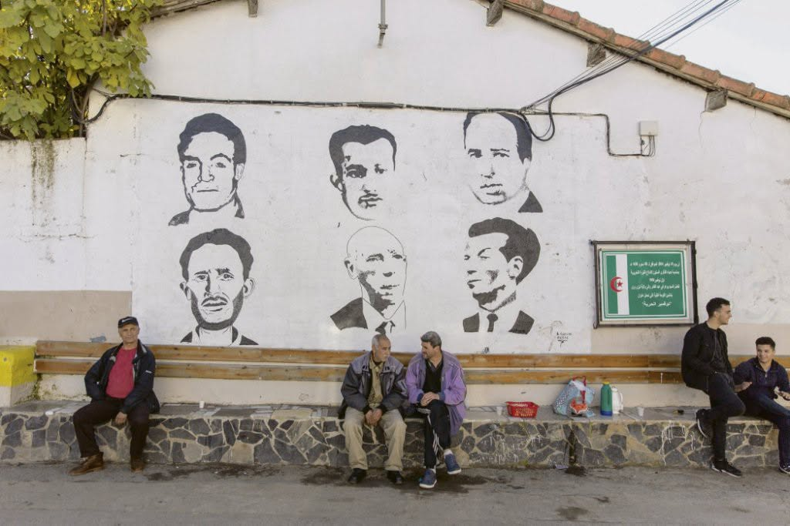

Alger, les murs qui se souviennent
Le vent porte
un sel ancien,
celui des départs
et des retours.
Les façades pâles
se souviennent
de chaque cri,
chaque détour.
La mer respire
lentement,
comme si elle portait
le poids des siècles.
Les collines d’Alger
s’allument,
une à une,
dans la brume
électrique.
Sur le port,
les mouettes tracent
des cercles
au-dessus
des mots qu’on tait.
Les hommes,
le regard en face,
pensent au pain,
au café,
à la paix.
Les vieux cafés
gardent la rumeur,
des voix
qui refont le monde
autour d’un verre
de thé amer.
Dehors,
un garçon
trace son avenir
sur le bitume mouillé
de pluie.
Un taxi file
vers Didouche,
les klaxons
cousent le matin.
Dans l’air —
promesse farouche,
et un soleil d’étain.
Une fille rit —
éclat bref,
comme un feu
sur la Casbah.
Dans ses yeux,
la ville entière :
fière,
blessée,
indocile.
Les murs respirent
l’attente,
la jeunesse plante
ses rêves
dans le bitume.
Même quand le ciel
se fait pesant,
Alger garde sa lumière,
comme un serment.
Les murs,
écaillés mais vivants,
portent des mots
qu’on n’efface plus.
“Demain sera meilleur”,
écrit quelqu’un,
et le vent le répète à la mer.
Sous ce ciel trop vaste
pour être oublié,
Alger reste debout,
battement de cœur,
ville d’amour,
ville de lutte.
Djamel Metref
At Yenni le 29 octobre 2025

← Tous les poèmes